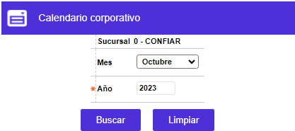
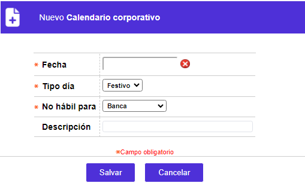

Calendario |
Mediante las opciones de Calendario corporación y Calendario entidad, se realiza el mantenimiento del calendario (control de fechas) de la entidad financiera. Al momento de realizarse la instalación del Sistema Bankbú® se debe actualizar la información relativa tanto a los días festivos nacionales, como a los días no hábiles comunes para todas las entidades financieras de la instalación.
Los días no hábiles de una oficina o sucursal se ingresan por la opción Calendario sucursal.
El formulario contiene las opciones Actualizar, Eliminar, y Adicionar. Adicionalmente, cuenta con un filtro de búsqueda.
Filtro: Se pueden realizar consultas a través de las siguientes opciones:

Sucursal o empresa |
Código y nombre que representan, acorde con el nivel, la corporación que aglutina a las diversas entidades financieras de la instalación, o la empresa o entidad a la que ingresó el usuario. Estos dos campos son informativos no modificables. |
Mes |
Combo no obligatorio que permite seleccionar uno de los meses del año. |
Año |
Campo obligatorio en el que se debe ingresar el año por el cual se desa filtrar. |
Adicionar: Si el usuario invoca la opción Adicionar se despliega un formulario con los siguientes campos:

Fecha |
Campo obligatorio en el cual se ingresará el día para el cual se desea ingresar las características que le corresponden de acuerdo al calendario de la entidad. |
'Tipo de día' |
Campo obligatorio que permite establecer, para el día seleccionado, su naturaleza: hábil, inhábil o festivo. Una vez ubicado (resaltado) el día sobre al que se desea asignar condición, con el mouse se selecciona el tipo al que corresponde haciendo un click sobre la opción respectiva. Para facilitar la identificación visual existe una diferenciación por #es de los tipos de días así: los hábiles aparecen en # negro, los festivos aparecen en # rojo fuerte, y los inhábiles aparecen en # azul aguamarina o turquesa. Al ubicarse en cualquiera de los días domingo estos se mostrarán como días hábiles y aparecen en # rojo claro; se muestran así por no ser usualmente días hábiles y por cuanto es la forma acostumbrada en que se presentan en la mayoría de calendarios. |
No hábil para |
Campo obligatorio que contiene lista de valores de la cual se puede seleccionar si la inhabilidad es para proceso, atención público o para ambas situaciones. |
Descripción |
Campo alfanumérico de 30 posiciones, no obligatorio, dentro del que es posible mencionar el motivo o la razón por la cual un día específico no es laborable o es festivo. |
Actualizar: Si el usuario invoca la opción Actualizar se despliega un nuevo formulario en el cual los únicos campos modificables son: Tipo día, No hábil para, y Descripción.